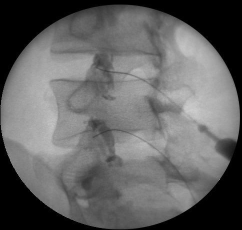
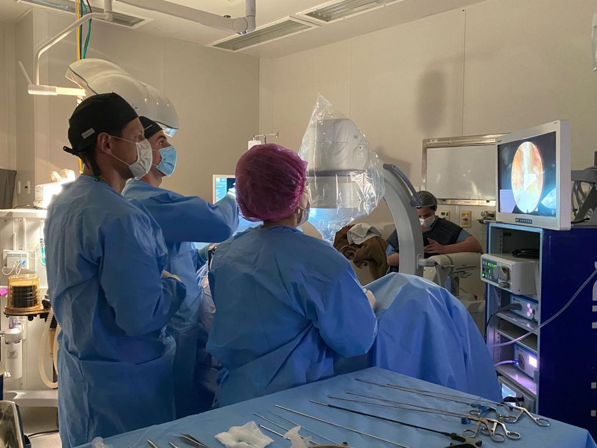
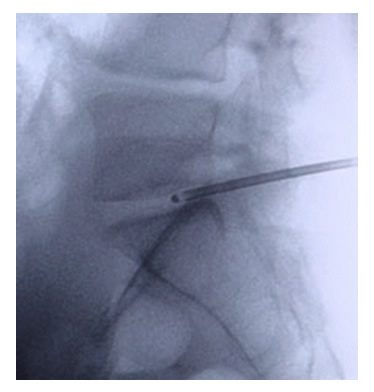
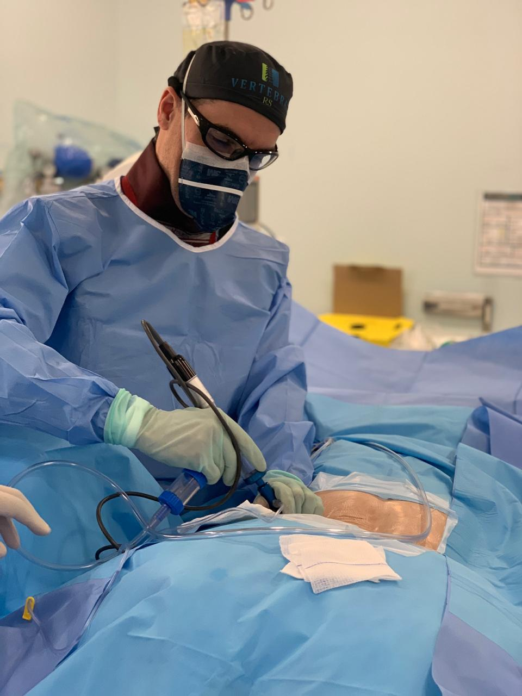

Em resumo
- Todos os procedimentos são guiados por imagem em tempo real.
- O bloqueio alivia a dor e ajuda a confirmar de onde ela vem.
- A radiofrequência pode prolongar o alívio da dor das articulações da coluna.
- A discectomia percutânea trata algumas hérnias por punção, sem incisão cirúrgica.
Bloqueios e infiltrações
O que é um bloqueio da coluna
É a aplicação de uma solução de anestésico local com anti-inflamatório em um ponto preciso da coluna, usando uma agulha fina posicionada com o auxílio de um aparelho de imagem. Os dois tipos mais usados são:
- Bloqueio facetário: feito nas facetas, as pequenas articulações que unem uma vértebra à outra e permitem o movimento da coluna.
- Bloqueio foraminal ou de raiz nervosa: feito junto à raiz do nervo inflamada, em geral por uma hérnia de disco.
Para que serve
O bloqueio tem duas funções. A primeira é tratar: aliviar a dor para que o paciente consiga se movimentar e fazer a reabilitação. A segunda é diagnosticar: se a dor some depois da aplicação em determinado ponto, isso confirma que ela vem dali.
Costuma ser indicado quando a fisioterapia e os anti-inflamatórios não trouxeram o alívio esperado. Às vezes é preciso mais de um bloqueio para determinar com precisão a origem da dor.

Como é feito
Para procedimentos na região lombar, o paciente deita de bruços sob o aparelho de imagem. Na região cervical, deita de costas. Depois de anestesiar a pele, o médico posiciona a agulha até o ponto desejado, injeta uma pequena quantidade de contraste para confirmar a posição e aplica a medicação. Em geral o bloqueio é feito em mais de um ponto.
Após 20 a 30 minutos de observação na sala de recuperação, o paciente é liberado.
Preparo
- Evite refeições pesadas antes do procedimento.
- Siga a orientação do médico sobre suspender analgésicos antes do bloqueio, para que o efeito possa ser avaliado.
- Mantenha as medicações de uso contínuo, como as de pressão, diabetes e colesterol, salvo orientação diferente.
- Mulheres em idade fértil devem ter certeza de que não estão grávidas.
- Vá com um acompanhante.
Depois do bloqueio
O alívio causado pelo anestésico dura de 1 a 6 horas. O anti-inflamatório atinge sua ação máxima no segundo ou terceiro dia. Como o procedimento também serve para o diagnóstico, anote quanto a dor aliviou e por quanto tempo, para conversar com o médico no retorno.
Pode haver dor no local, tontura ou sensação de fraqueza na perna nas primeiras horas, por efeito do anestésico. Gelo sobre o local ajuda a aliviar o desconforto da injeção.
Denervação por radiofrequência
O que é
As facetas são as pequenas articulações que unem uma vértebra à outra. A dor que nasce nelas é levada ao cérebro por um nervo pequeno, chamado ramo medial. Na denervação por radiofrequência, um eletrodo posicionado junto a esse nervo o desativa com o calor gerado por um aparelho de radiofrequência.
O ramo medial só transmite sensibilidade da articulação. Desativá-lo não afeta a força das pernas ou dos braços.
Para quem é indicada
Para pessoas com dor crônica na lombar ou no pescoço que vem das facetas, quando essa origem foi confirmada por um bloqueio facetário. É uma opção de tratamento não cirúrgico para quem teve alívio com o bloqueio, mas viu a dor voltar.
Como é feita
O paciente deita de bruços, para a região lombar, ou de costas, para a cervical. Com sedação e anestesia da pele, o médico introduz o eletrodo até as proximidades do ramo medial, guiado por imagem, geralmente em mais de um ponto da coluna. O eletrodo é conectado ao gerador de radiofrequência, que desativa o nervo.
O procedimento leva cerca de 30 minutos. Depois de 20 a 30 minutos de observação, o paciente é liberado para casa.

Preparo
- Jejum a partir da meia-noite anterior ao procedimento.
- Mantenha as medicações de uso contínuo, como as de pressão, diabetes e colesterol, salvo orientação diferente.
- Mulheres em idade fértil devem ter certeza de que não estão grávidas.
- Vá com um acompanhante.
Recuperação e resultado
Nos primeiros dias pode haver dor no local das punções, que melhora com gelo. O alívio da dor facetária costuma aparecer nas semanas seguintes. O nervo pode se regenerar com o tempo e, se a dor voltar, o procedimento pode ser repetido.
Discectomia percutânea
O que é
Na discectomia percutânea, o médico chega ao disco com uma sonda fina introduzida pela pele, sem cortes, guiado por um aparelho de imagem. Pela sonda, retira-se uma pequena parte do núcleo do disco. Isso reduz a pressão dentro dele e, com ela, a compressão sobre o nervo.

Para quem é indicada
Para casos selecionados de protrusão discal contida, quando o disco está abaulado, mas o seu anel externo não se rompeu, e a dor não melhorou com o tratamento clínico. Hérnias extrusas, com fragmento solto, costumam pedir outras técnicas, como a cirurgia endoscópica.
Como é feita
O procedimento é feito com anestesia local e sedação. O paciente fica deitado sob o aparelho de imagem e o médico posiciona a sonda no centro do disco. Depois de um período de observação, o paciente é liberado, em geral no mesmo dia.

Recuperação
Pode haver dor no local da punção nos primeiros dias. O retorno às atividades é progressivo e orientado individualmente, junto com a reabilitação.